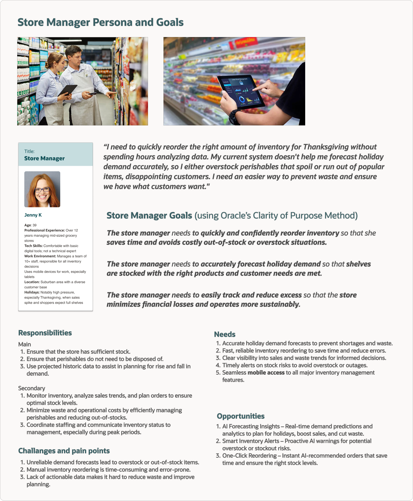
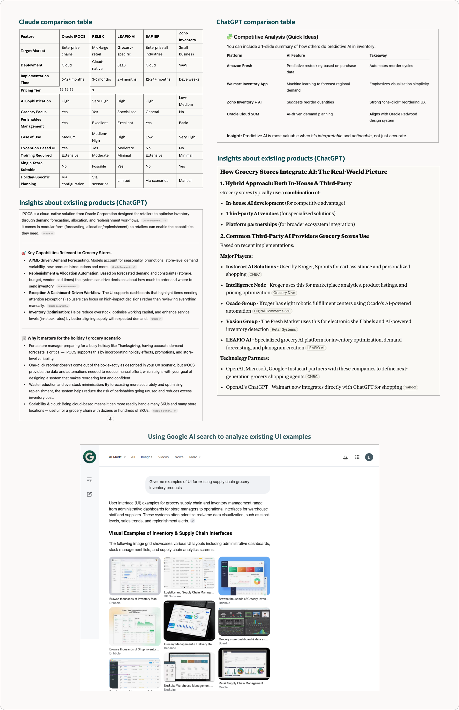
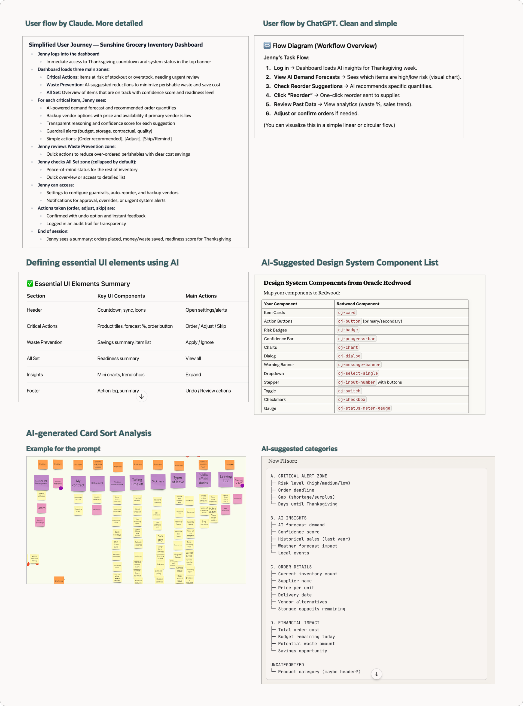
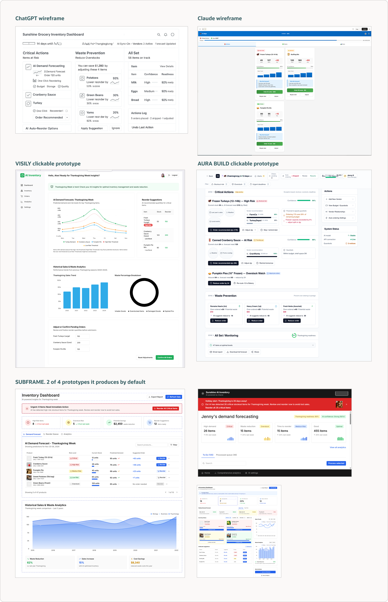
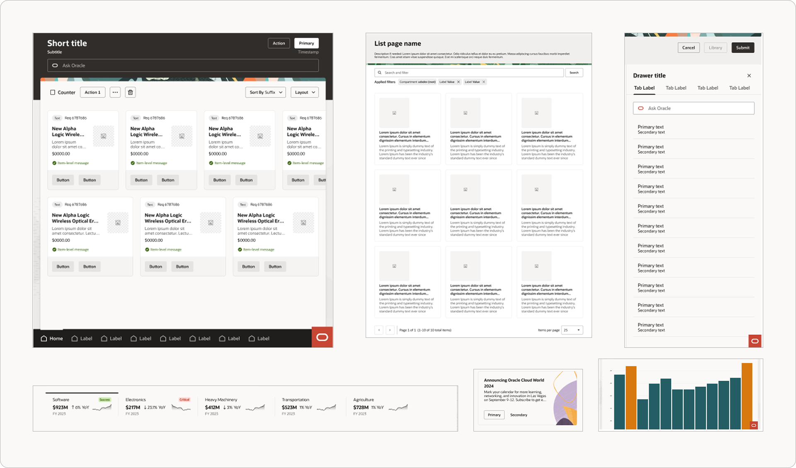
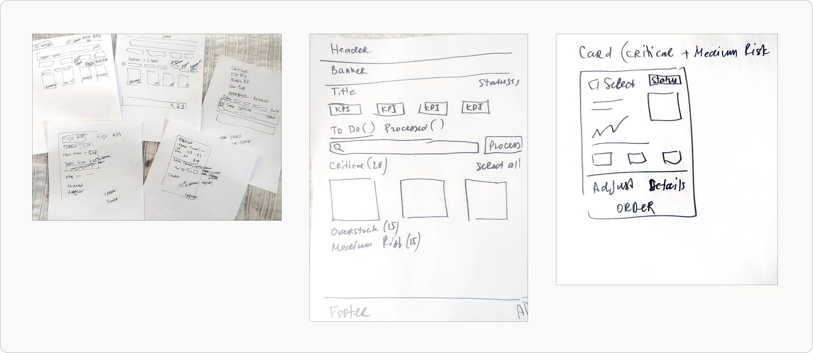
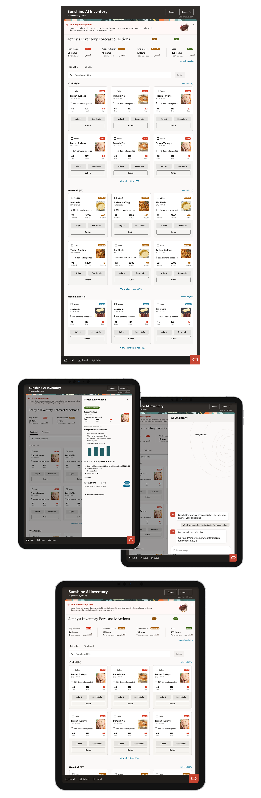

Grocery Store Inventory Management
I was the primary designer on this project, leading the end‑to‑end experience from research through final design. This project explores how AI‑assisted tools can support and streamline a structured UX process for Oracle Data Center Supply Chain Management products. At the same time, I examined how AI can be integrated into these products while recognizing its current limitations and risks.
A simulated supply chain scenario highlighted challenges with an outdated inventory system, including over-ordering, product waste, and frequent stockouts during peak periods. AI tools supported research, synthesis, and early design exploration. The final solution was designed in Figma using the Oracle Redwood design system to align with enterprise constraints, following a mobile-first approach optimized for tablet use.
Defining Persona and User Goals
In this case, I mostly relied on AI tools to understand the domain space and define a persona. I applied Oracle's Clarity of Purpose method while doing so, focusing on defining goals and understanding the problem.


Understanding Domain Space and Competitive Analysis
I heavily used AI tools to understand the domain space (grocery store inventory products) and learn more about existing products, how AI can be used to improve them, and the current limitations or risks associated with AI in this space.
User Flows, Identifying UI Elements, and Card Sort
By providing detailed prompts, I asked several AI tools to help define user flows, review suggested UI elements, and conduct a card sort exercise. I then analyzed the results and compared the differences between the outputs provided by each tool.


AI Sketches
I then used a few AI tools, including tools that specialize in UX and UI (Visily, Aura Build, and Subframe), to create wireframes and layouts based on what I had learned so far. Feel free to check some of these layouts. Please note that some of these projects cannot be easily shared. Additionally, these tools are updated on a regular basis, so the links may not work. A few static screenshots are included to show the results.
Visily AI clickable layouts
Aura Build clickable layouts
Using Oracle Redwood Design System
I then reviewed Oracle's comprehensive Design System, Redwood, to see which established patterns and components I could use for my product. Below are screenshots of some potential components and templates I identified. Learn more about the Redwood Design System.


Hand Sketches
After analyzing the AI sketches, Oracle Design System components, and everything I had learned, I drew a few sketches before starting to put together any designs in Figma.
Final Designs
I then started working in Figma using the established design system, as it was part of this exercise. A few final design screens are attached below.

Through this project, we learned that AI can speed up early research, persona creation, and ideation, but human oversight remains essential for validation and direction. AI outputs often need refinement since tools can be inconsistent or lack deeper context. Using multiple tools produced better results than relying on just one. Overall, AI is a valuable assistant that enhances, rather than replaces, human creativity and decision-making in UX design.